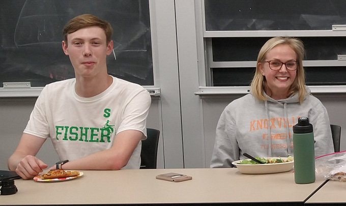

First, we thank the outgoing Notre Dame Linux Users Group officers for all their hardwork last year!
President Emeritus: John Sullivan (aka jsull), Computer Science.
Secretary: Sebastian Gutierrez (aka sebmaster36), Computer Science.
Media Relations: Selina Nie (aka snie), Computer Science.
We also congratulate our other graduating Senior members:
Jon Abbott (aka jabbott4)
Colin McKechney (aka L3gion)
Finally, we welcome the new incoming officers for the 2023-2024 school year:
President: Anna Klempay (aka alkie), Senior, Computer Science.
Vice President: Daniel Blittschau (aka dblitt), Junior, Computer Science.
Treasurer: Coleen Joelle Valencia (aka lychee), Senior, Computer Science.
Secretary: Jozef Porubcin (aka Octavius), Senior, Computer Science.
System Administrator: Tin Bui (aka tinjamin), Junior, Math.
The goal of the new administration is to improve our internal operations, lay the ground for new exciting projects, and hopefully introduce new Notre Dame Linux Users Group merchandise this year!